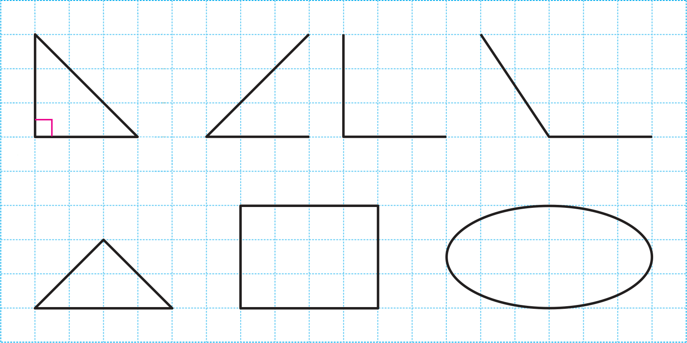
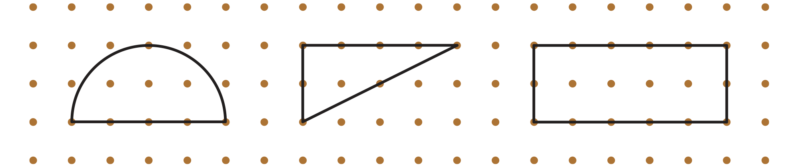
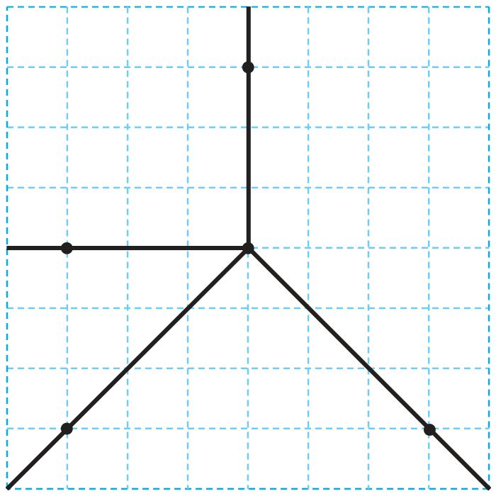
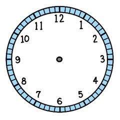

- 개념 정리
- 1
- 2
- 3
- 4
- 5
-
-
그림과 같이 종이를 두 번 접었을 때 생기는 각을이라고 합니다.직각
-
ㄱㄴㄷㄱㄴㄷ
-
직각 ㄱㄴㄷ을 나타낼 때에는 꼭짓점 ㄴ에 표시를 합니다.
-
-
1 와 같이 직각을 찾아 로 표시해 보세요.
 -
2 직각이 모두 몇 개인지 써 보세요.
개0개1개4 -
3 삼각자를 사용하여 점 ㄴ을 꼭짓점으로 하는 직각을 그려 보세요.
삼각자를 드래그하여 옮기세요. -
4 직각을 모두 찾아 기호로 나타내 보세요.
ㄱ
ㄴ
ㄷ
ㄹ
ㅁ
각 ㄱㅁㄴ 또는 각 ㄴㅁㄱ, 각 ㄷㅁㄹ 또는 각 ㄹㅁㄷ -
5 설명하고 있는 시각을 구해 보세요.
7시와 12시
사이의 시각이야.9시시계의 긴 바늘이
12를 가리키고, 긴바늘과
짧은바늘이 이루는
각은 직각이야.